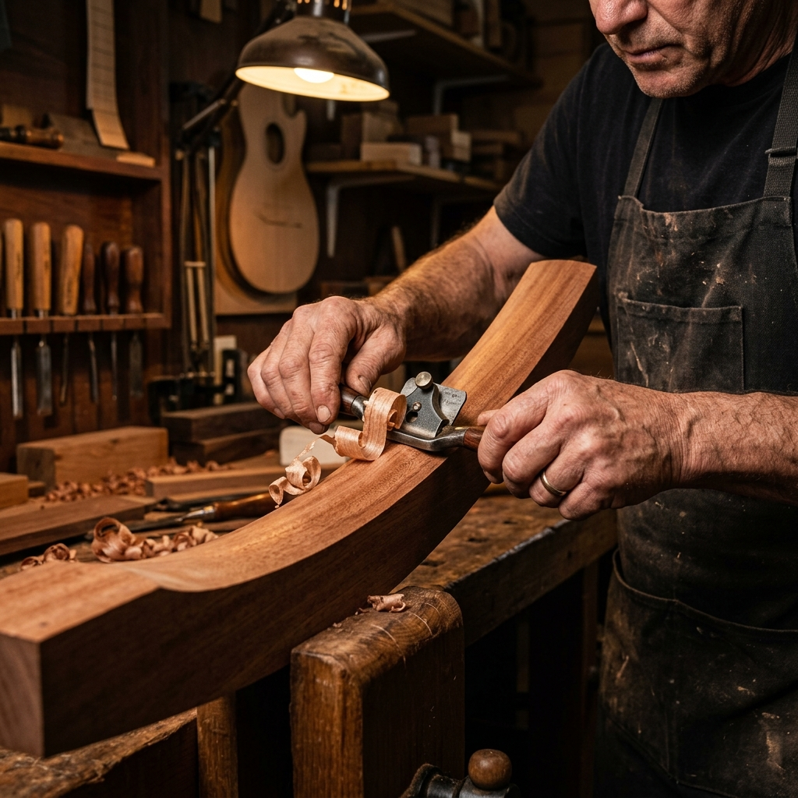

Hand-Carved Since 1988
Zero CNC profiling. Every curve shaped to the natural anatomy of the player.
Our Heritage
Where Time Meets Handcraft
Founded in 1988 in the Pacific Northwest, FRET was created to push the boundaries of acoustic physics without abandoning classical woodworking tradition.
We believe a truly great instrument cannot be churned out on high-speed industrial assembly lines. Wood is an organic material — no two spruce boards flex identically under tension. By hand-voicing every top and shaping every neck with traditional Japanese spoke shaves, we bring out the singular musical personality hidden inside each tree.
0
Years of Craft
0
Instruments Built
0
Clients Returning
0
Tonewood Varieties